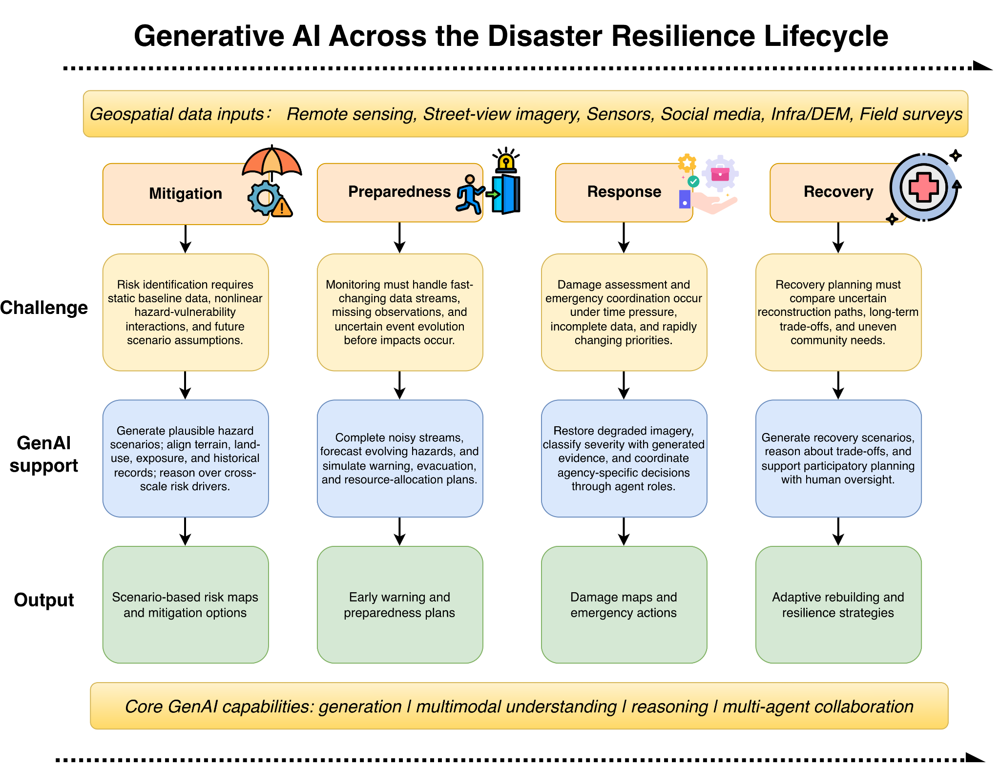
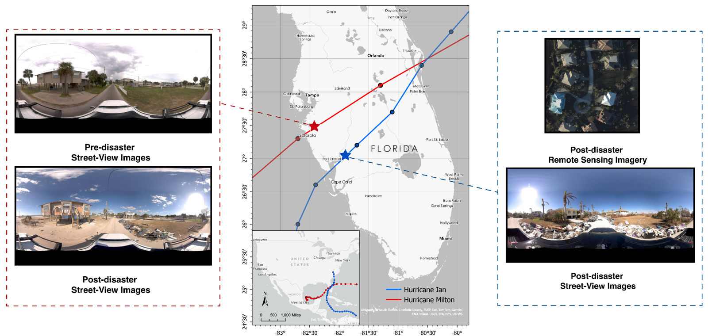
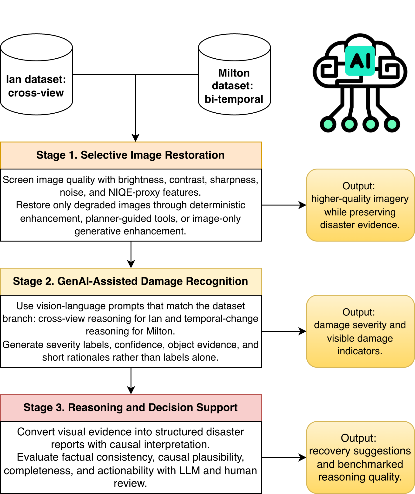
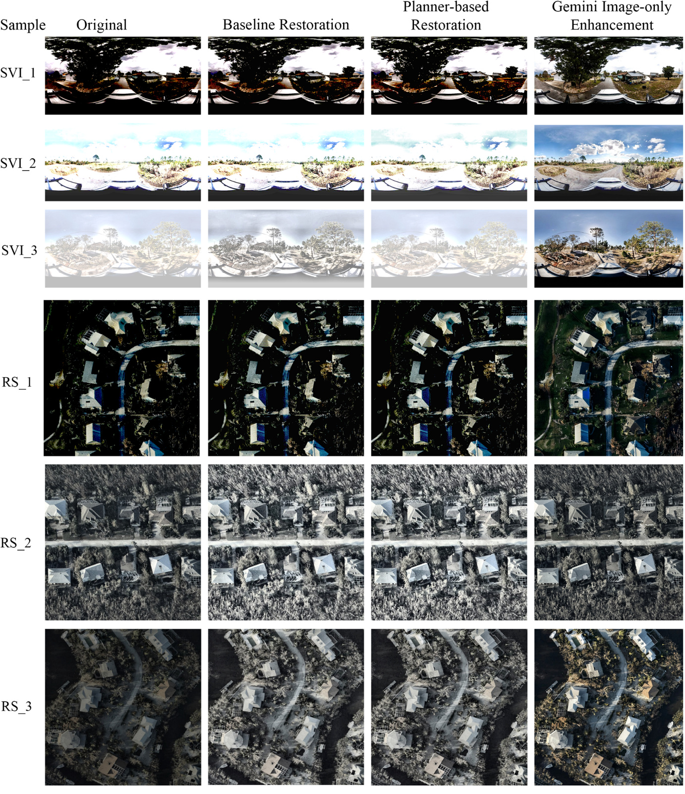
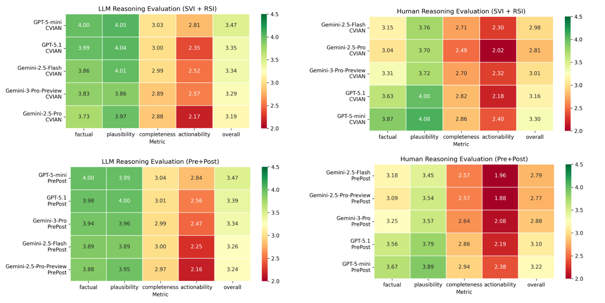
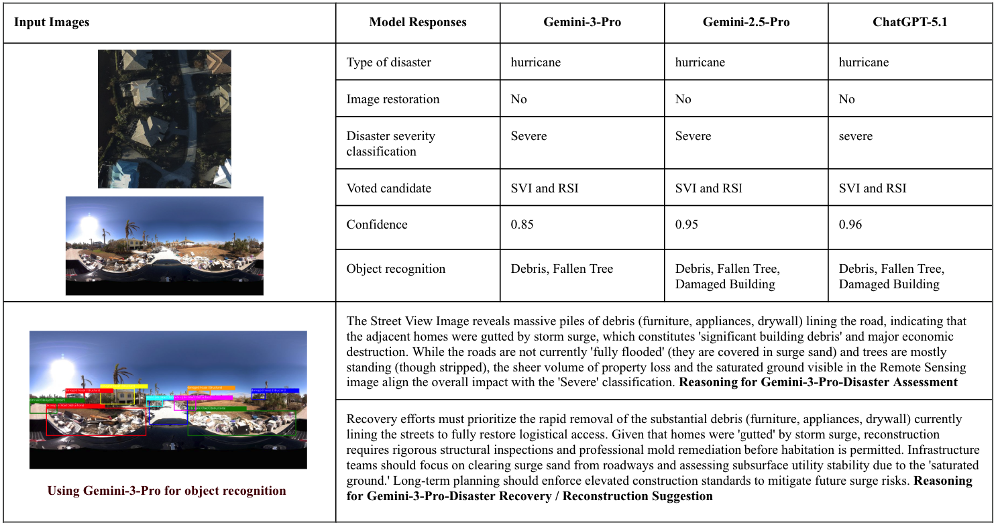

A lifecycle framework that places generation, multimodal understanding, reasoning, and multi-agent collaboration across mitigation, preparedness, response, and recovery, plus a hurricane case study on Florida street-view and satellite imagery.
Generative AI has shown promising progress in content generation, multimodal understanding, and reasoning, presenting new opportunities for disaster resilience research and practice. Disaster resilience is the capacity of socio-ecological-infrastructural systems to withstand, adapt to, recover from, and maintain continuous or improved operation in the face of disasters.
This chapter proposes a framework that systematically elaborates on how GenAI can be incorporated into resilience-improvement tasks across the four phases of emergency management. Using two recent hurricanes in Florida as examples, it demonstrates GenAI processing multi-source geospatial data, remote sensing and street-view imagery, for fine-grained damage assessment, and it closes with key challenges and future directions.
Information produced during response and recovery feeds future mitigation and preparedness. Multi-agent orchestration coordinates specialized functions, while human oversight and validation stay essential throughout.

Losses must be estimated before damage is observable, and archives under-represent rare, compound, and cascading hazards.
The political economy of false alarms, on data streams with different latencies, resolutions, and credibility.
Hours-scale decisions on incomplete, spatially biased evidence that must be aligned across satellite, aerial, and ground views.
Institutional incentives favor rapid restoration over risk-informed transformation; recovery trajectories are uneven.
Labels from both source datasets were harmonized into one three-level scale: minor, moderate, severe. The case study never assumes every input has both remote sensing and street view; it tests how GenAI helps at three concrete steps.
300 pairs of post-disaster street-view imagery and post-disaster remote sensing imagery at matched locations.
300 pairs of pre-disaster (2023) and post-disaster (2024) street-view imagery from the same region.

No-reference IQA features (brightness statistics, dark/bright pixel ratios, Laplacian variance, a noise proxy, a NIQE-inspired metric) screen each image. Only degraded images are restored, through a heuristic baseline, a Gemini planner that picks a constrained deterministic toolchain, or an image-only Gemini enhancement. Output is kept only if it beats the original by a preset margin.
Vision-language models output an overall severity, a confidence score, and visibility flags for five indicators: debris, fallen trees, flooded roads, damaged buildings, downed lines. Cross-view pairs are read jointly; bi-temporal pairs are compared for change.
Models write structured disaster reports with causal interpretation and recovery actions. Reports are scored 0–5 on factual consistency, causal plausibility, information completeness, and actionability by an LLM judge (GPT-5.2) and by three graduate-student evaluators.

Gemini-3-Pro leads on cross-view data, GPT-5.1 leads on bi-temporal data, and in both settings the most accurate model also has the lowest severity-aware error.
Composite quality score Q before and after each branch (Table 2).
| Dataset | Type | Restored | Original | Baseline | Planner | Gemini |
|---|---|---|---|---|---|---|
| A. Ian | Satellite | 141 / 150 | 0.62 | 0.73 | 0.71 | 0.69 |
| A. Ian | Street view | 22 / 150 | 0.75 | 0.78 | 0.76 | 0.79 |
| B. Milton | Street view | 4 / 150 | 0.76 | 0.78 | 0.78 | 0.79 |
Accuracy and NCSE (lower is better) across five models (Table 3).
| Model | Acc · Ian | Acc · Milton | NCSE · Ian | NCSE · Milton |
|---|---|---|---|---|
| GPT-5.1-mini | 0.387 | 0.503 | 0.307 | 0.248 |
| GPT-5.1 | 0.573 | 0.591 | 0.213 | 0.218 |
| Gemini-2.5-Flash | 0.360 | 0.470 | 0.363 | 0.299 |
| Gemini-2.5-Pro | 0.380 | 0.447 | 0.373 | 0.327 |
| Gemini-3-Pro | 0.627 | 0.493 | 0.190 | 0.291 |
Overall F1 on five indicators (Table 4). Bars scaled to 1.0.
| Dataset | Model | F1 | Recall | Precision | Accuracy |
|---|---|---|---|---|---|
| A. Ian | Gemini-3-Pro | 0.774 | 0.784 | 0.799 | 0.925 |
| A. Ian | Gemini-2.5-Pro | 0.573 | 0.914 | 0.503 | 0.716 |
| A. Ian | Gemini-2.5-Flash | 0.554 | 0.814 | 0.540 | 0.747 |
| A. Ian | GPT-5.1 | 0.547 | 0.584 | 0.643 | 0.840 |
| A. Ian | GPT-5.1-mini | 0.497 | 0.579 | 0.465 | 0.795 |
| B. Milton | GPT-5.1 | 0.553 | 0.540 | 0.571 | 0.955 |
| B. Milton | GPT-5.1-mini | 0.466 | 0.486 | 0.450 | 0.861 |
| B. Milton | Gemini-2.5-Flash | 0.435 | 0.439 | 0.433 | 0.831 |
| B. Milton | Gemini-2.5-Pro | 0.427 | 0.468 | 0.398 | 0.789 |
| B. Milton | Gemini-3-Pro | 0.391 | 0.357 | 0.512 | 0.847 |
Per-indicator scores (Table 5): Gemini-3-Pro on Ian reaches 0.94 for damaged buildings, 1.00 for downed lines, 0.92 for fallen trees. GPT-5.1 on Milton is best in every category, with 0.97, 0.92, 1.00, 0.91, 0.99 across buildings, debris, lines, trees, and flooding. Full CSVs in results/.



Descriptive reasoning is strong; actionable reasoning is not. Factual consistency and causal plausibility mostly exceed 4.0 out of 5, but actionability sits between 2.0 and 2.8 for every model. Human raters agree with the LLM judge on this ranking, and cross-view inputs produce more complete reports than bi-temporal ones.
The future of GenAI in disaster resilience depends on balancing increased autonomy with strong principles of responsibility, while closing the equity gap in who can use these tools at all.
Incomplete and biased disaster data, hallucination, and model opacity threaten trust when decisions affect lives and critical infrastructure. Responsible frameworks need transparency, uncertainty quantification, explainability, and governance covering privacy and fairness.
Generation, perception, reasoning, and multi-agent collaboration point toward adaptive, self-improving disaster-intelligence systems. Autonomy must remain reliable under uncertainty, aligned with domain expertise, and under controllable human oversight.
Compute and API costs mean the regions most exposed to disaster risk are least able to benefit. Data-sovereignty barriers limit transnational response. Remedies: lightweight, locally deployable models, open access, and coordinated data-sharing governance.
Status: submitted. The BibTeX note and DOI will be updated on publication.
@incollection{yang2026genai4dresilience,
title = {Generative AI for Disaster Resilience},
author = {Yang, Yifan and Zou, Lei and Tian, Hao and Zhou, Bing
and Abedin, Joynal and Li, Zongrong and Tu, Zhengzhong},
booktitle = {Geography in the Age of Generative AI: Innovations in
Mapping, Analysis \& Geospatial Applications},
editor = {Mai, Gengchen and Huang, Xiao and Jain, Devika and Lunga, Dalton},
publisher = {CRC Press / Taylor \& Francis Group},
year = {2026},
note = {Submitted}
}